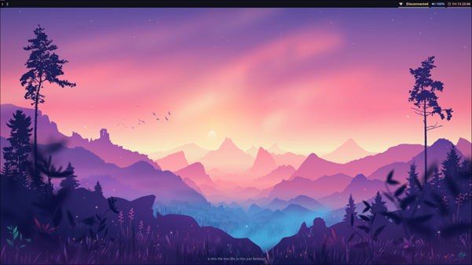
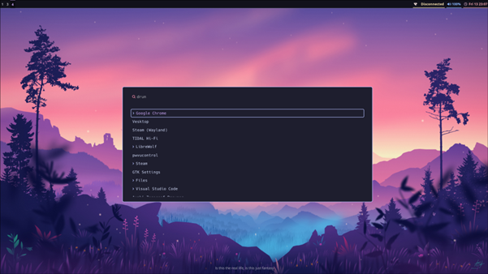
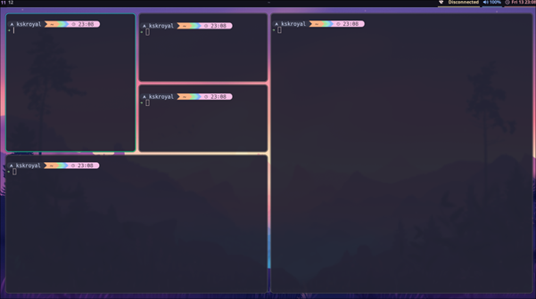
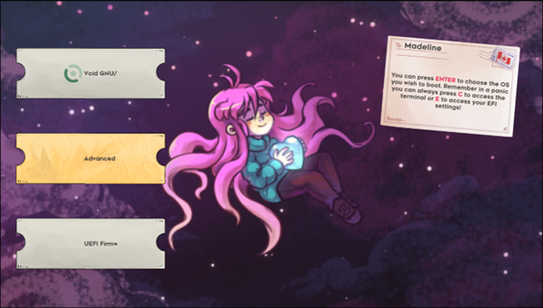

1. Core System & Secure Boot
Establishing a signed, secure dual-boot environment with Windows.
sudo grub-install --target=x86_64-efi --efi-directory=/boot/efi --bootloader-id=EndeavourOS --modules="tpm" --disable-shim-lock
- Secure Boot: Use
sbctlto self-sign the kernel. - Key Maintenance: Initialize
pacmankeys before major installs.
2. Essential Tooling
Setting up the foundations for AUR and Python applications.
git clone https://aur.archlinux.org/yay.git && cd yay && makepkg -si
Locale Fix: If builds fail, run
export LC_ALL=en_US.UTF-8
7. Final Result




Troubleshooting Reference
| Issue | Solution |
|---|---|
| AUR apps not appearing | Update desktop database or restart session. |
| Discord Screen Share | Use Vesktop + xdg-desktop-portal-hyprland. |